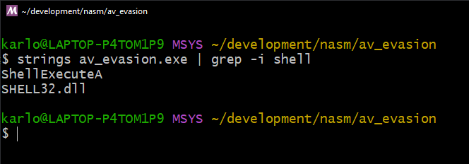

Classifying More With Less: New VGL4NT Update
TLDR:
- Packed malware machine learning classifier can only previously identify 10 packers
- Solution was a customized version of model ensembling, which is to train multiple models and resolve their results
- It works with a slight caveat of more extended training and processing, which I could happily live with
I recently presented VGL4NT, my tool that uses machine learning to classify packed malware, at the Blackhat Middle East and Africa meetup. During my talk, I candidly shared one of the tool's limitations which is it can only identify 10 packers because of my hardware constraints. If I want it to be able to identify more, I need to get more GPU (which will be costly) or keep my money and come up with a clever solution. Well, this post is about the latter.
A Simple Solution
The solution I came up with isn't exactly original. It's based on Task Decomposition, which …
Classifying Malware Packers Using Machine Learning
The recent rise in popularity of AI reignited my interest in machine learning. It inspired me to dive deeper into understanding how it can be applied to malware analysis and, more importantly, how to better detect malware packers, as almost every malware nowadays uses them.
My research and experiments eventually led me to make a web app, which I call the VGL4NT Malware Packer Classifier (https://packers.vgl4nt.com/).).
(For those curious, V.G.L.4.N.T. is a play on "Vigilant" and stands for "Visual Guided Learning 4 Neutralizing Threats")
Current State of Packer Detection
Traditional packer detection approaches like DiE (Detect it Easy) and Yara rules depend on known signatures and patterns to identify packers. These tools scrutinize a file for specific indicators, like unique sequences of bytes or strings. While effective in many cases, they have drawbacks, like when a packer is modified or if the …
Malware sandbox evasion in x64 assembly by checking ram size - Part 2
In the previous post, I explored a sandbox evasion technique that uses GetPhysicallyInstalledSystemMemory to check the size of the RAM of the machine. The idea behind this technique (MBC Technique ID: B0009.014) is that any value that is lower than 4GB may probably be a sandbox (to reduce costs). This information can then be used with other sandbox evasion techniques to confirm.
For part 2 of this series, I'll be talking about an alternative Windows API function called GlobalMemoryStatusEx. This function is as straightforward as the first one, but requires the passing of a pointer to a C struct. This is significant because I'll be converting a working C code to x64 assembly so we can fully understand how it works under the hood.
Using GlobalMemoryStatusEx
Here is an example of an implementation of GlobalMemoryStatusEx in C that we'll later be converting to x64 assembly.
#include <stdio.h>
#include …Malware sandbox evasion in x64 assembly by checking ram size - Part 1
During my malware sandbox evasion research, I stumbled upon the Unprotect Project website. It is a community-contributed repository of evasion techniques used by malware. I saw that the the Checking Memory Size technique doesn't have a example snippet yet so I figured this would be a good first contribution to the project.
What to expect
In this blog post I'll be making a code snippet that showcases how to get the size of a computer's RAM in C. I will then convert this code into x64 assembly, mostly for me to practice writing in it, but also so that we can understand it better.
Checking the memory
The idea behind this evasion technique is simple. Most modern user machines will have at least around 4GB of RAM. Anything lower than that can be an indication that the machine is probably a sandbox (To save costs). While it's not exactly fool-proof …
String anti-virus evasion in x64 assembly (Part 2)
In my last blog post, I discussed a way to hide parameter strings from being detected by an anti-virus. The solution was simple and it worked. However, it was incomplete as strings of function calls and loaded DLLs were still detectable in memory.

In this post I'll be talking about the other technique from the same blog post we were following before. It does a good job of explaining the concept which I'll be covering here too. I will also be writing the code in assembly as an added bonus, so we can better understand what goes on under the hood.
The problem
Let's revisit our code from the last time. We have two functions being called ShellExecuteA and ExitProcess.
#include <windows.h>
#include <shellapi.h>
int main(void)
{
char ca_notepad[] = { 'n','o','t','e','p','a','d',0 };
ShellExecuteA(0, "open", ca_notepad, NULL, NULL, SW_SHOW);
ExitProcess(0);
}
Upon compiling …
String anti-virus evasion in x64 assembly (Part 1)
One of the features I implemented for my Remote Access Tool was an anti-virus evasion capability in the form of strings obfuscation. It wouldn't fool an EDR or a reverse engineer but it was quick to implement so I added it.
This was over a year ago. I decided to revisit this feature to try and understand it better and find out if it is actually effective.
What to expect
In this two-part blog post I will look into the following:
- Hiding argument strings
- Hiding API call strings
THe one you reading now is about the first one. I will be explaining how it's done in C and later convert it to x64 Windows Assembly so we can better understand what's happening under the hood.
Hiding function argument strings
I got the idea for this AV evasion technique from this blog post. The author posits that one part of an …
Converting a malware dropper to x64 assembly
In this post I'll be listing down lessons I learned while converting a simple malware dropper written in C to x64 assembly.
I started this project as a way to deepen my understanding of assembly so I could be better in malware development and reverse engineering (And also because I love coding in assembly and would always find an excuse to use it).
What to expect
I'll be going through sections of the C file and show the how it can be written accordingly in x64 Windows assembly. Take note, however, that the conversion is not one-to-one, meaning there are other ways of writing it. What I did was to structure the assembly code so that you can easily compare it with the C code while making sure that the end result will be the same.
I won't be covering the basics of assembly because this post does a better …